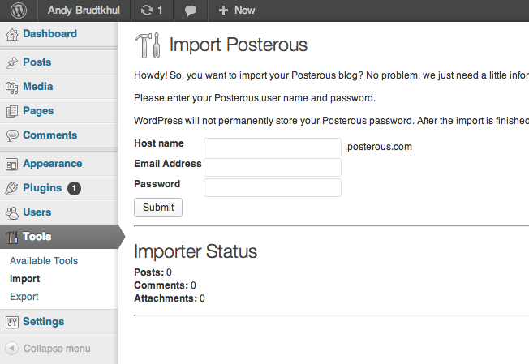

Posterous
The blog you wrote by sending an email, acquired by the company that then deleted the emails.

In 2008, Sachin Agarwal launched a blogging platform with the shortest possible pitch: if you can send an email, you can blog. It was called Posterous, and the trick was real -- email a post, with photos attached, and the site published it, formatted, hosted, live. The barrier to writing in public had been "learn a CMS." Posterous got it down to "press send." [S1]
It is worth pausing on how good that idea was. Everyone had email. Email was the one writing tool the entire world already knew, with attachments, drafts, and forwarding built in. Posterous simply made the inbox a publish button, and for a moment a certain kind of person -- photographers, families, engineers who did not want a website but wanted a record -- blogged by default. [S1]
In March 2012, Twitter acquired Posterous, and the meaning of the sentence "Twitter acquired Posterous" was never really disclosed. The Hacker News thread from the day is 612 points of speculation: an acqui-hire? A platform play? Nobody could say what the product was for, including, arguably, the buyer. [S2]
The answer arrived within a year. Twitter announced in 2013 that Posterous would close on May 31, and offered the users backup tools -- the corporate equivalent of telling passengers where the life vests are. The shutdown schedule shifted in the telling (the February thread says April 30, the final notice said May 31), but the destination did not: the blogs had a death date, and the owners had a deadline to export or lose everything. [S1] [S3]
Then came the thread that belongs in every collection of the dead web. A user posted a call to arms -- Come and help save Posterous from oblivion -- and the community tried, in the weeks before the deadline, to archive strangers' blogs before the lights went out. Not their own writing; strangers'. It is the same impulse that saved GeoCities, aimed at a smaller town: if the company will not keep the record, the record-keepers will have to be volunteers. [S4]
Posterous matters to this gazette for two reasons. First, it is the purest specimen of the acqui-hire death: a healthy, loved product absorbed for its people and switched off for its bother. The blogs were not killed by failure. They were killed by success -- their makers', elsewhere.
Second, it is a warning about convenient writing tools. The easier the publishing, the more of your life flows through the pipe, and this pipe closed fourteen months after being bought. Every "just email it to us" product since carries a small asterisk that Posterous wrote.
In 2008 a service said: write us a letter, and we will keep it forever. It kept them for five years.
Remembered: the publish button that lived in your inbox, and the volunteers who packed the boxes.
Sources
- S1: Wikipedia: Posterous -- https://en.wikipedia.org/wiki/Posterous
- S2: Hacker News (2012-03-12, 612 points) -- https://news.ycombinator.com/item?id=3695407
- S3: Hacker News (2013-02-15, 301 points) -- https://news.ycombinator.com/item?id=5228997
- S4: Hacker News (2013-03-12, 305 points) -- https://news.ycombinator.com/item?id=5364641
PROVENANCE
| Exhibit no.: | 016 |
| Data-source mode: | facts: seed-corpus; wikipedia-unreachable; wayback-cdx-unreachable; hn-algolia (live, subject query) |
| Illustration: | sourced image -- Bing image search, retrieved 2026-08-29 |
| Found via: | bing-image-search |
| Image url: | https://cdn.brudtkuhl.com/48w/uploads/2013/02/Screen-Shot-2013-02-16-at-10.58.51-AM.png |
| Generated: | 2026-08-29 |
| Generator: | deadweb-pipeline 0.1 (deterministic scaffold) |
| Editorial pass: | web-product-engineer (editorial pass 2) |
| Status: | published |
| Source page: | https://brudtkuhl.com/blog/how-to-move-from-posterous-to-wordpress/ |
SOURCES
- Wikipedia: Posterous -- https://en.wikipedia.org/wiki/Posterous
- Hacker News thread: "Posterous acquired by Twitter" (2012-03-12) -- https://news.ycombinator.com/item?id=3695407
- Hacker News thread: "Posterous will turn off on April 30" (2013-02-15) -- https://news.ycombinator.com/item?id=5228997
- Hacker News thread: "Come and help save Posterous from oblivion" (2013-03-12) -- https://news.ycombinator.com/item?id=5364641